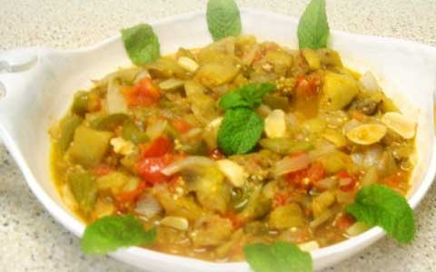
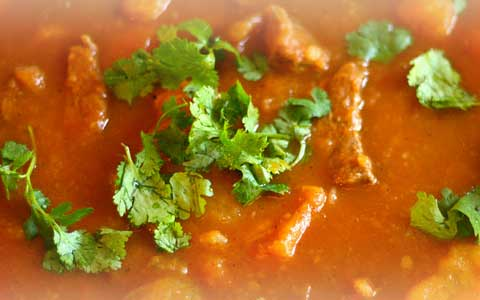

Part of Mezze/appetisers. Falafel is a deep-fried ball or patty made from ground chickpeas and fava beans.
Read more on toriavey.com/
Musakaat Batenjan with Rice recipe

Summary: This recipe showcases the Lebanese version of the popular Moussaka eggplant sauté.
Moussaka Ingredients (4 servings)
* 3 medium size eggplants (about 1.5 lbs total)
* 1 medium size garlic head
* 2 large onions (yellow or white)
* 2 large tomatoes (1.5 lbs)
* 1 large green peppers
* 1/2 cup of quality olive oil
* a dash of cayenne pepper
* a dash of salt
1. Chop the vegetables in chunks. The eggplant in cubes of about 1.5 inches, onions cut in length, tomatoes in chunks.
2. Add the eggplant and onions with the oil and salt to a stew pot and sautee on medium heat for about 5 minutes.
3. Add the garlic and green peppers to the pot, mix , lower the heat, and then let simmer for 10 minutes.
4. Add the tomatoes and cayenne pepper, mix in, close the lid, and let simmer for 20 minutes while mixing the pot every few minutes. The lid has to be closed so the juice doesn’t evaporate as quickly from the tomatoes.
5. Once ready, let cool down and serve cold (hence the name) along with pita bread and an optional side of garden veggies such as mint, and green onions.
Preparation time: 15 minute(s)
| Cooking time: 35 minute(s)
Ref: www.mamaslebanesekitchen.com
Yakhnet Batata

Summary: Lebanese Potato and Beef Stew is a common traditional dish that is served with a side of rice.
Ingredients
* 1.5 lbs of Beef Stew Meat, cubed
* 3lbs Potatoes, peeled and cubed
* 1 head of fresh garlic, crushed or minced
* 1 medium onion, minced
* 2.5 table spoons of ghee or butter
* 2-3 teaspoons of tomato paste
* 1 cup of coriander leaves finely chopped (preferably green)
* 1.5 teaspoon of salt
* a dash of Lebanese 7-Spices (or allspice)
* Warm Water
* A side of rice
1. In a deep cooking pot, sauté/fry the meat in the ghee/butter on medium heat with a bit of salt for about 8-10 minutes or until medium-well cooked.
2. Add the garlic, onions, coriander leaves, 7-spices and the remaining salt to the beef and sauté well together for another 3-4 minutes.
3. Add about 6-7 cups of warm water (watch out for the steam), bring to a boil, cover and let simmer/cook on low heat for 2 to 2.5 hours.
4. Meanwhile, bake the cubed potatoes in the oven for about 30 minutes at 370 degrees, then add them to the simmering meat half-way through its cooking time.
5. During the last 30 minutes of cooking, add the tomato paste, stir well, then let simmer for the remaining time.
6. Serve hot with a side of rice.
Ref: www.mamaslebanesekitchen.com
Hummus Awarma
Ful Mudammas
Recipes for popular Mezze dish Ful-Mudammas. Fava beans simmered in tomato, garlic and olive oil.
Read more on toriavey.com/
useful links
Listings of popular Lebanese recipes.